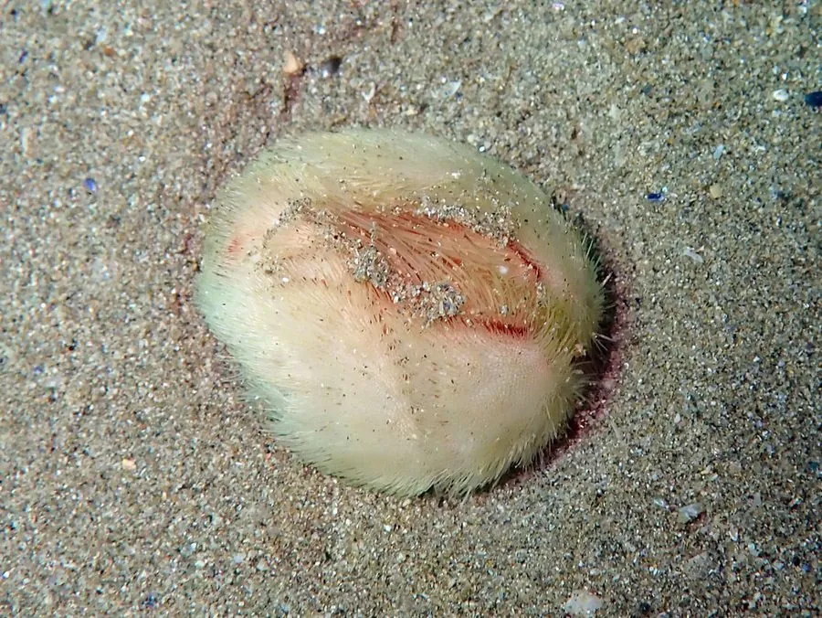

其他无脊椎动物 · 动物界
心形海胆 Echinocardium cordatum

壳呈心形、埋在沙中栖居的海胆，靠管足在沙内取食有机碎屑，退潮后沙滩上常见其隆起痕迹。
- 分类
- 门棘皮动物门纲海胆纲目猬团海胆目科心形海胆科属心形海胆属
- 栖息环境
- 潮下带至数十米深的细沙海底，垂直埋栖
- 地理分布
- 欧洲大西洋沿岸、地中海至东亚沙质海域
- 保护级别
- 常见种，无保护级别；挖沙与底拖网破坏栖息地
物种志
心形海胆的壳长约五至八厘米，壳形不规则，前端略尖，后端钝圆，从背面看呈心形，壳面覆有短而密的黄褐色棘刺，棘刺向后倾斜，便于在沙中挖掘。它的口位于壳的前端腹面，肛门在后端，步带区呈花瓣状，管足特化为呼吸和取食的构造，整体外形与常见的球形海胆差别很大。
它分布于欧洲大西洋沿岸、地中海至东亚的沙质海底，栖息在潮下带至数十米深的细沙中，垂直埋栖，深度可达二十厘米，靠管足在沙内收集有机碎屑。它挖掘时会把沙粒通过棘刺和管足搬运，在沙面形成隆起的痕迹，退潮后的沙滩上常能看到。它以沉积物中的有机颗粒为食，是沙质海底重要的沉积食性动物，拖网和挖沙会破坏其栖息环境。
形态与习性
- 壳长约五至八厘米，背视呈心形
- 棘刺短密，黄褐色，向后倾斜便于挖掘
- 口与肛门口在前端腹面，肛门在后端
- 埋栖垂直埋于沙中，深可达二十厘米
- 食性管足收集沙中有机碎屑
- 痕迹沙面留下隆起与穴口
趣味知识
- 它不圆，壳从背面看像个心，前后还不对称。
- 它一辈子埋在沙里，只在沙面留下一条隆起的土脊。
- 它的棘刺朝后倾斜，像一把把小铲子，边挖边把沙往后推。